律诗的定型与初唐四杰
隋唐五代文学 · 第二课 · 课堂实录
一、开篇：接续上一讲的问题 00:00–01:02
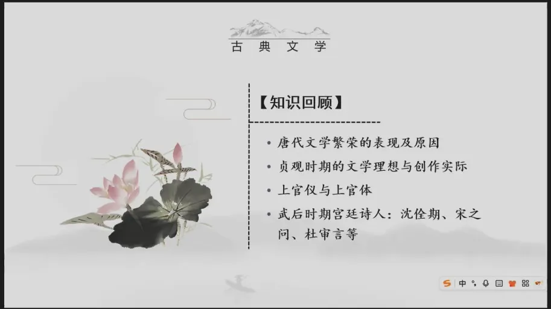
代文学繁荣的表现，分也同时系统的分析了唐代文学的繁荣的一些相关的原因，我们就开始来初步的认识到了初唐文学。其实昨天讲到的内容围绕着一个点，就是初唐文学在其繁荣的进程过程之中，有一群诗人群体，他们是做出过重要贡献的，从他们的身份上讲，他们都频繁的参与宫廷诗会。所以我们把它称之为叫做宫廷诗人。所以最后课程结束的时候我们，讲到了一个问题，就是初唐的这些宫廷诗人，他们对于唐诗发展的贡献体现在哪里呢，他们主要是在诗歌的体系的完善方面，应该说他们是做出了重要的贡献，那我们就来看这个问题。
二、从元稹到龙榆生：律诗的命名与学理阐释 01:02–03:38
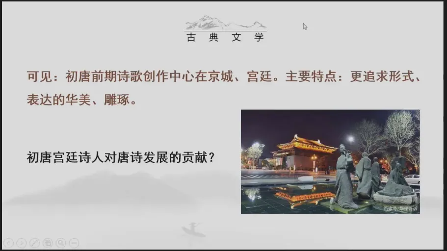
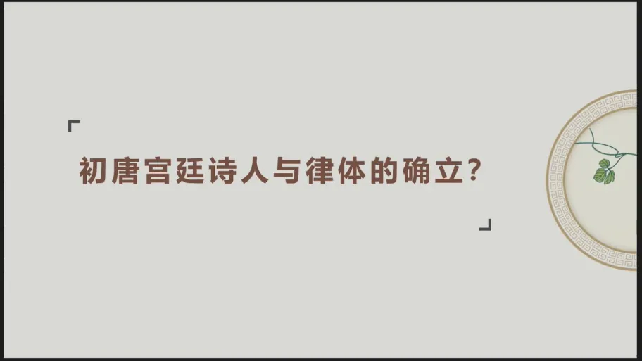
初唐的宫廷诗人与律体的确立，这个所谓的律体就是大家在学习南朝文学史中提到的永明体新体诗，在南朝的时候，他是被叫做永明体新体诗，进入到了唐代，因为这种格律的格式就被固化下来了。所以后来就称之为叫做格律诗，他们本质上是相通的，指的是一个内容，我们先来看一下，关于诗歌的这个律化、格律，唐人是怎么认知的，我们先来看一段材料。
元稹《唐故工部外郎杜君墓系铭序》 01:41–03:08
这是中唐的元稹受杜甫的孙子杜嗣业之邀，为他的爷爷杜甫所做的一篇墓志铭，《唐故工部外郎杜君墓系铭序》在这篇墓志铭里边，他要去追溯一个诗人一生的功绩，那必然就要牵扯到对于唐代诗歌发展的一个梳理。所以元稹就提到了“唐兴，官学大振”，这个就是指官方的这个儒家之学，逐渐的他就系统化建立起来了，“历世之文，能者互出”，那能者互出，我们可以理解为就是初唐时期人才济济，能干的人很多，“而又沈、宋之流，研练精切，稳顺声势”，谓之为律诗。所以我们现在经常用到的律诗这个概念，最早应该就是出自于元稹所写的这篇墓志铭，他首先提出了这样一个概念。但是元稹在这里，它是一个描述性的语言，他只是讲“研练精切”，那就是说去系统的深入钻研的这个声律的搭配，“稳顺声势”，让这个声律的搭配的格式就固定化了。所以就形成了所谓格律化的诗歌，简称为律诗。
龙榆生《中国韵文史》的学术化阐释 03:09–03:38
结合元稹的这个说法，我们再来看龙榆生，龙榆生先生，这是我们近现代史上一位词学研究的一位重要的开创者和奠基者。所以他是一位诗词研究的专家，他的《中国韵文史》里边，他就对律体进行了一个学术化的阐释，就是从学理上理论上给他又做了进一步的阐释，那他想强调的是什么呢，律诗。
三、律体与古体的分别 03:39–04:49
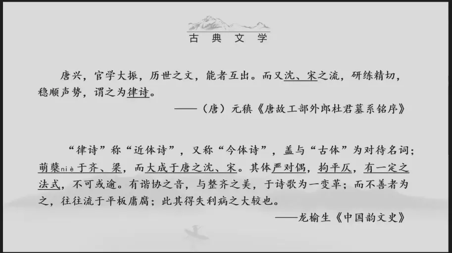
在旁人看来又叫做近体诗或者是今体诗，因为唐人看来，这样的一种讲究格律化的诗体和过去传统的古诗是不一样的。那么什么是古诗呢，最典型的古诗就是大家在学习汉代文学的时候讲到的古诗十九首，很典型五言的形式。那么句子整个的篇幅的体式是可长可短。所以你看古诗十九首最长的有十二句，短的有八句，它是不固定的，好，那么和这样的诗歌相对照。所以唐人就把这种律化的诗歌称之为叫做近体诗或者是今体诗。所以龙榆生先生首先讲到了这个概念的产生是和古体相对相参照而言的。那么这样的一种诗体是萌蘖于齐、梁，而大成于唐之沈宋，你看又再次提到了沈宋，元稹口中的这个沈宋和龙榆生在《韵文史》里提到的沈宋，都是指武后时期的重要的宫廷诗人沈佺期宋之问。
四、沈宋与《新唐书·宋之问传》 04:50–08:54
好。那么龙榆生讲了，在他们的手中就定型了一种新的诗体，那这种新的诗体是怎样的呢，“其体严对偶，拘平仄，有一定之法式”，你看他在写作的格式方面是有非常严格的限定和要求的，“不可或逾”，你是没有办法改变的，“有谐协之音，与整齐之美”，所以这种格式它写出来非常的整齐，非常的流利，在龙先生看来，从诗歌的演进的过程来看，“于诗歌为一变革”，而不善者为之。那么假如你没有很好的掌握了这个格律诗写作的规则的话，“往往流于平板庸腐”，“此其得失利病之大较也”，所以这是一个相对学术化的一个阐释，它既讲到了这个名称的来源，也提到了这个名称上的一些本质性的特征，这个特征就是这种体制所独有的以及比较的，他在写作上，如果你这种规则运用的好会是怎样的状态，那运用的不好又会带来了怎样的不足，那我们就结合龙榆生给到我们这个概念，我们接着来看。
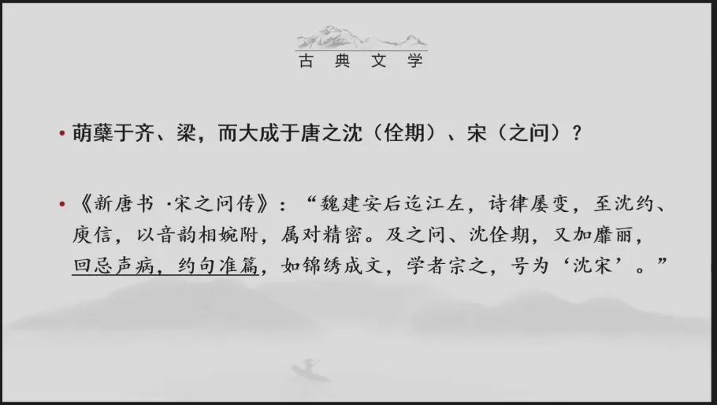
关于他讲到的“萌蘖于齐、梁”，而大成于唐之沈宋，我们前面提到了这讲的是沈佺期和宋之问，关于这两位宫廷诗人在诗歌体式定型方面的共同贡献，这应该说是唐人的共识。所以大家看，在《新唐书》就是宋人所编的《新唐书》在《新唐书·宋之问传》中也讲到了，说“魏建安后迄江左”，那么就是继建安诗歌之后，就进入到了这个东晋南朝的时候，这又是一个古体诗比较盛行的一个时期，诗律屡变至沈约，庾信、沈约，这就是永明体的一个重要的代表诗人，到了齐梁时期的这个永明体，“以音韵相婉附”，“属对精密”，这个时候诗歌之中运用大量的律化的句子，讲究这种格律的搭配，在南朝永明年间，它就成为了一种自觉的追求，有意识的一种创作，这样的一种创作意识发展下去，延续到了唐代，到了初唐沈佺期、宋之问这里，又加靡丽，好，他们又做了进一步的改造，叫做“回忌声病，约句准篇”，那么这两句话是什么意思呢，一个他们在声律的搭配之间有了更加明确的规定，因为其实大家看啊南朝时期发现了这个四声平上去入。但是这个四声之间你怎么搭配才能让这个声调听起来是和谐的。其实这个四声之间搭配是有困难的。所以沈佺期和宋之问在这方面他们做了一个简化的工作，“回忌声病，约句准篇”指的是什么呢，大家现在看到的律诗，通常一篇、一首诗歌都是八句，每一句或者是五个字，或者是七个字，这就叫做“约句准篇”，好，这个体式定型下来之后，“如锦绣成文，学者宗之，号为沈宋”，所以他们两个人相当于就是以一己之力奠定这个律诗的它的一个格式。所以对于律诗的定型是很重要的，那我们就具体的来看一下这个“回忌声病”、沈宋他们所做的具体的贡献，或者说提出的一个规则创作的原则是什么呢，一个，大家来看。
五、回忌声病（一）：拘平仄 08:57–12:52
四声与中古音 08:57–10:41
这是六朝时期，特别是在南朝时期，随着佛经的翻译所发现的所谓的四声，这是中古音的音韵系统，平上去入它和近古音是不一样的，特别是这里面变化最大的是什么呢，是入声字，这个入声字几乎到元代的时候他就消失了，你看《中原音韵》里有一个非常有名的一个口诀，“入派三声”，就是入声字消失之后，消失了之后，他就融入到了平声、上声、去声之中，就形成了我们现代汉语四声的一个基础。所以大家注意这里讲到的四声，它不能等同于我们现代汉语之中的四声，现代汉语之中的四声是以近古音的音韵系统为基础的，这是一个中古音的音韵系统。那么这个四声你看它怎么发音呢，后面我给大家举了一些例子，这个平声基本上就是接近我们现代汉语之中的一声，这个所谓的上声就是在声调上会有一个曲折，先降后升，那就类似于我们今天现代汉语中的三声，好，那么去声它在后代依然是去声，就是一个降调。那么这个入声字，它是最为明显的一个变化，就是这个调子在中古时期，它是一个非常短促的调子，你比如说“白”，我们现在读作阳平，它是属于阳平。但是在中古音之中它是这样的一个发音。所以你看非常的短促，这种短促的调子就称之为入声。
四声化二元：平与仄 10:41–11:27
那么沈宋他们所做的工作是什么呢，你看声律之间的互相搭配，这个规律就比较的繁复、复杂，你不断的去探索、探究、实验。那么沈宋他们所做的工作就是把四声化二元，我把它归为两大类。那么这个平声就归为平类。那么上去入它都是在声调上会发生一点变化的。那么就把它归入仄声类。所以四声之间的搭配就简化成为了平和仄的搭配，你看四声化二元。那么二元之间在互相搭配，是不是这个规则就简化明了，很容易掌握了呢。
平仄安排的三个特点 11:28–12:52
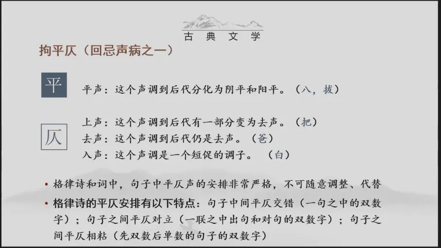
好，那我们来看在格律诗和词之中，用到的这个平仄的规律是一致的。那么他们的平仄的安排都是有严格的规定，不可以随意的调整代替。那么格律诗之中，他平仄的安排有这样的一个特点，就是句子中间是平仄交错。所以一句之中，它的这个双数字平平仄仄是这样的一个交错。那么句子之间是平仄对立，就是上句和下句之间的平仄它是对立的。那么句子和句子之间就是每两句，每两句又是平仄相粘。也就是说在格律诗之中，二四六八句，它一定都是要押平声韵。所以大家注意诗歌格律诗是一定要押平声韵，唯一的一个韵。那么发展到词，词是可以既押平声韵也可以押仄声韵。那么从歌唱的角度而言，大家可以去看，就是现存下来的唐宋词的格律词牌押仄声韵的情况要更为普遍，因为它更能显示这个情调、声调的一种变化，体现这种旋律的变化。所以这是格律诗之中平仄安排的特点。好。
六、回忌声病（二）：必押韵 12:52–16:09
格律诗的押韵规则 12:52–14:08
那我们再来看所谓的“回忌声病”，他还要讲究就是一定要押韵，首句可以入韵，也可以不入韵。所以在唐人所流传下来的格律诗之中，首句入韵和不入韵的情况都是存在的，单数句都是不需要押韵的，因为双数句都只能押平声韵。所以这就使得单数句的最后一个字只能用仄声，这也是写作的规则，双数句都必须押韵，而且押韵的字是限平声韵，一韵到底，诗歌之中是平声韵一韵到底，在词中可平可仄，而且可以换韵。所以词就更加的灵活，到了散曲就更随意了，平仄还可以互换，因为这个时候音韵系统也发生一些变化。所以大家可以看到诞生于唐代的这种格律化的诗歌，从体制上讲它更加的严格、精美、整治。但是他对于写作者的要求也更高，你得遵循这么多的规则，写出来的这个诗歌才是一个合格的作品。
韵书：平水韵与《佩文韵府》 14:09–14:54
好，那我们来看，如果说大家对于写作这个具体的格律是感兴趣的话，一定要去用古代的韵书，我们要去做这种近体诗，依据的韵书是什么呢，平水韵，清人把它整理为了叫做《佩文韵府》所以你去查这个《佩文韵府》之中，平水韵，有一百零六个韵部。那么这个平水韵这才是诗歌写作所要运用的韵律，真正意义上纯粹的格律诗，可能我们看到的现代的一些讲究押韵，他是按照我们现代汉语的四声押韵，它其实已经不是真正意义上纯粹的旧体格律诗了。
各体用韵的比较 14:55–16:09
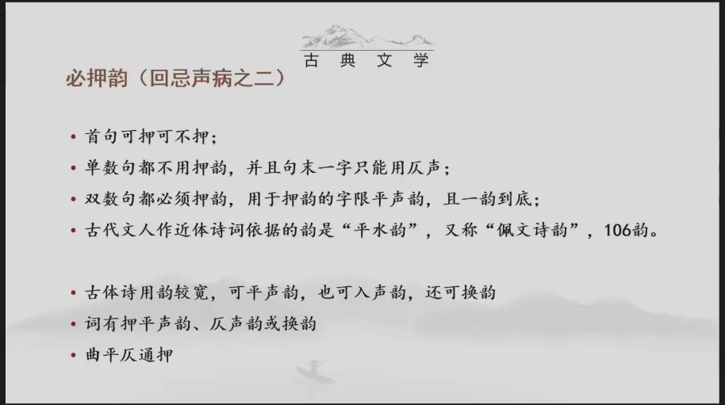
好，我们再来比较一下，这里强调的大家注意近体诗对于押韵平仄的要求是必然的，就是你必须遵守的一个创作规则。但是这个声韵的发展，它是一个自然的声音的现象。所以在古体诗之中，它其实也有押韵的情况，那古体诗的押韵，它就是一个自然的方式。所以它可以是平声韵，也可以是入声韵，长篇的古诗还可以换韵。所以这是古诗的情况。那么词则是平或者仄都可以，或者还可以换韵，我前面给大家提到了，到了词曲的时代。那么曲的时代就是平仄可以通押，因为你看这个时候入声字消失了，“入派三声”，所以有时候过去这个仄声韵就进入到了这个平声，就导致这种平仄互押的这样一种状态，这是关于押韵的原则，我们有必要的了解，这是很初步的初级的知识，但如果大家想要了解这个格律诗的写作，他其实内部有一套相对比较复杂的操作的这个过程。
七、约句准篇：句数与字数 16:11–18:42
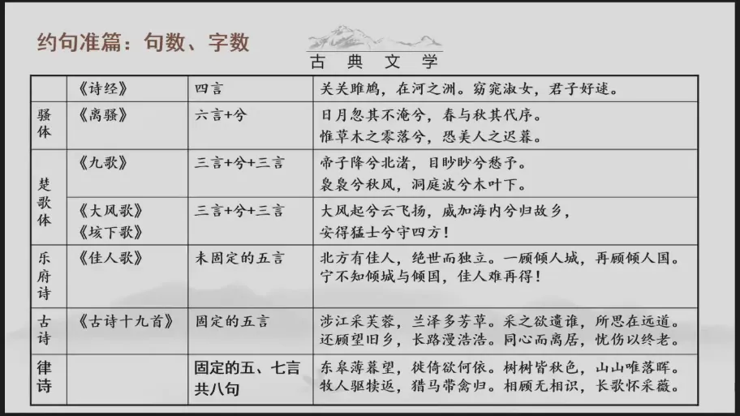
那我们再来看“约句准篇”，这是对于句数和字数的相关的要求，大家可以回想一下，自《诗经》以来，我们这个诗体的演进是先有了四言，以《诗经》为代表，对不对，《离骚》之中他开始出现了七个字的句。但是因为这七个字的句子里边有一个虚词兮。所以它不是真正意义上的七言诗句。所以我们讲它是六言加兮，你看这是《离骚》的情况。那么楚辞体制之中，这个六言加兮是一种体式，还有一种体式是三个字，加兮再加三个字，好，那我们说就可以发现，最基础的构成这个句子的节奏单位，或者是四，或者是三，或者是二，因为在四言之中是二二式，对不对，在六言之中它可以是三三式。那么两个字和两个字叠加可以变成四。所以三加四又构成了七言的句式，这是和诗歌的吟诵有关系的，你要掌握这样的一个节奏感，那你吟诵出来的这个诗歌才是一个美的诗歌。那么再到了五言体，五言体的这个乐府体，乐府体之中就开始出现了五个字的句子。所以这是汉武帝时期。那么李延年为汉武帝所献的一首《佳人歌》你看这首《佳人歌》之中基本上都是以五个字的句子为主，只有一句“宁不知倾城与倾国”，但是这个“宁不知”它类似于一个感叹词。所以在这里五言就开始在汉代逐渐的兴盛起来了。那么五言最终的定型是要到了东汉末年《古诗十九首》文人五言抒情诗的成熟的重要标志。所以这个时候五言定型下来了。那么五言定型了之后，很快又出现了七言，以曹丕的《燕歌行》为代表。所以这个时候诗句的五言化，七言化它就固定了。所以大家可以看到先唐的诗时代。这就是五言七言古诗盛行的时代，从唐代，则是五七言为主的格律诗盛行的时代的一个开启。所以这个时候律诗它就是固定的五七言句，一共有八句。所以约句准篇指的就是这个意思。
八、严对偶 18:43–23:15
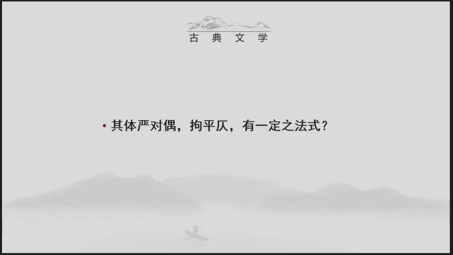
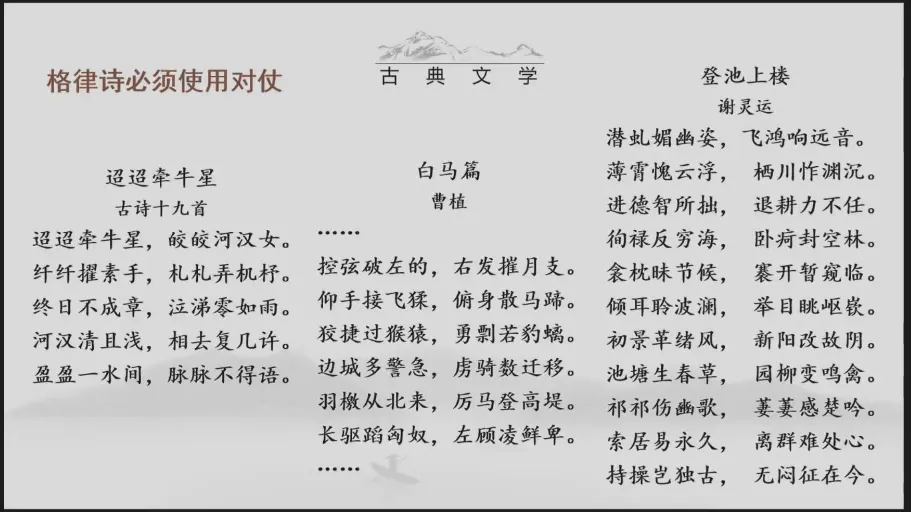
那我们再来看，沈宋还讲到了他们的贡献，他们的贡献还在于“严对偶，拘平仄，有一定之法式”，是啊，就是说格律诗之中“严对偶”，必须要使用对仗，那关于对仗的这样的一种修辞方法，这在古诗之中就已经出现了，大家看古诗十九首的这一首《迢迢牵牛星》“迢迢牵牛星，皎皎河汉女”，“纤纤擢素手，札札弄机杼”，很典型的对偶是不是。但是这种对偶的使用，它是一个自然化的状态，它不是一种自觉的、有意识的追求。那么在诗歌之中，有意识地大量使用对偶，这是自建安以来，一直到两晋，甚至到南朝文学中不断的去发展，凸显华丽的这样的一个现象。所以你看曹植应该说是整个建安时代写作诗歌最为华丽的一位诗人，他的成就也最高，语言也最美，这是他写到的这个少年游侠儿的《白马篇》你看他在描写这个《白马篇》的时候，“控弦破左的，右发摧月支。仰，手接飞猱，俯身散马蹄。”也用到了对偶，而且他的这个对偶要比在古诗十九首中用的对偶更富有形象性，更生动，因为他表现了这个游侠少年的这种敏捷，向四面八方——你看左右、仰俯，来展示他们这种行动的一种敏锐、敏捷，好，我们再来看谢灵运的诗歌，谢灵运是曹植的崇拜者，他不是讲天下人的聪明可以分为十斗，曹子建就独占八斗，才高八斗就是从此而来的，他认为他自己可以独占一斗，剩下的那一斗则是天下人共分。所以他是这样来评价他和曹子建的，这个才是才行的，在谢灵运的这一首代表作《登池上楼》大家看其实从第一句开始就是对偶的句子，就说明在南朝时期，大量的使用这个对仗，就成为了诗歌写作之中普遍遵循的原则。换言之就是这个诗歌越写越美，使得他的句子的对仗整齐。所以你看几乎只有最后两句，只有最后两句没有用对仗，前面全部都是用到了这种对仗。所以这样的一种艺术表现方法，语言上我们称之为叫做一种修辞的方法，讲究对仗，后来就被固化到了律诗的创作之中。
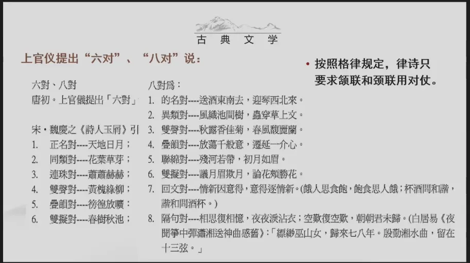
昨天的课上我们提到了，上官仪曾经提出了“六对”、“八对”说。那么这个六对、八对就提供了有效的艺术经验，使得这个对偶在律诗之中成为了一个普遍使用的定律。所以你看他是讲到的这个六对、八对，他怎么去论述这个六对、八对，原文已经散佚掉了。但是在其他的文献里，魏庆之的《诗人玉屑》里他提到了，你看这种所谓的“正名对”，对天地，对日月，那就是名词，对名词，对不对，“同类对”，就是属性上要相同，花叶、草芽；“连珠对”，对“萧萧瑟瑟”，讲究音乐，你看不同的形式，这样的一种对偶的方式。所以这是上官仪根据他自己的写作经验总结出来的，按照这个格律的要求，律诗他只有中间的四句是必须要用到对偶、对仗的。也就是说第三第四第五第六，这几句是必用。第一第二句是可用可不用。但是用的情况也比较的普遍，通常来说最后两句一般是不用了。但是也有通篇都用对偶，你像杜甫的《登高》就是很典型，通篇都是对偶，八句话都是对偶句。所以这个对偶在诗歌之中，也是必须要求使用的创作技巧之一。好。
九、律句格式与联的名称 23:15–27:13
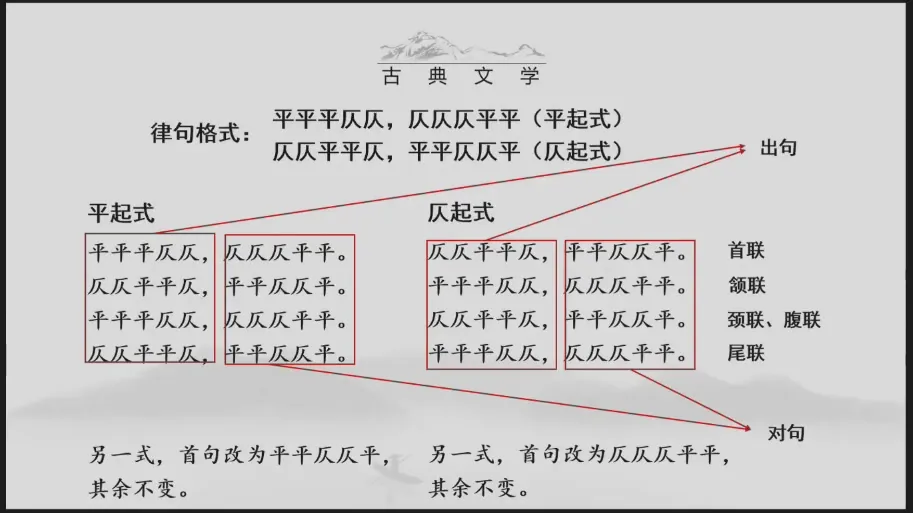
那我们前面提到了，律诗他要讲平仄，他要严对偶。所以这就形成了固化的一些律诗的格式，你看如果说第一个字是平。最后一个字也是平，我们把它就称之为叫做平起平收式，如果第一个字是仄，最后一个字是平，这是仄起平收式。所以平起式、仄起式形成了四个最基本的律句，这四个律句相互搭配，就构成了律诗最基本的一种格式形式。所以你看平起的这个平平平仄仄，仄仄仄平平，这个规律我们在现代汉语中可能讲到，这两个单位就叫做一个音部，相当于一个音部加一个音部，它中间再加一个单字。那么在格律诗之中，他有一个口诀叫做“一三五不论”，“不论”什么意思，就是中间的这个第三个字，它有时候平仄会发生一些变化，就是因为格律诗的这个平仄要求过于的严苛，但实际上诗人在具体的操作过程中，他都会有一些的变通的办法，那这个我们就不再详细的展开了。所以大家可以看到，这其实就是以仄声为首句的第一个字。但是它的二四六八句依然是要平声收束，就是我们前面提到的五言的格律诗，它是每一首诗歌八句。那么偶数句押，平声韵。所以大家可以看到句子与句子之间平仄对立，句子之中是平仄相错。那么你这个首句这个双数句的平声韵就把这些句子粘连在了一起，形成了一个完整的整体。所以第一第二句我们通常的称之为叫做首联。第三第四句就是颔联，这个第五第六句我们又称之为颈联或者是腹联。最后两句这叫做尾联。那么在一联之中，这个首句就叫做出句，你看第一句话就叫做出句。那么和它相对的，就称之为叫做对句，这些概念大家都要了解一下，因为在古代的很多的诗话里，他可能会用到出句如何如何，对句如何，那大家要知道他指的是在律诗之中什么位置的诗句，好，经过了这样的一个规则化，律诗特别是五律就正式的确立了。所以沈佺期和宋之问他们两个人在诗歌史上最为重要的贡献就是对于律体的确立，总结了六朝以来声律方面的一些创作经验，就完成了从永明体它的四声律到唐诗的平仄律的过渡，促进了诗歌艺术的发展。所以这个ABCD甲乙丙丁的搭配是复杂的。
但是我们一旦把它简化为了AB甲乙的搭配就相对好操作，而且规定了它的格式，要求了它内部的这个技巧的运用，律诗这种体式他就定型下来了，当然沈宋也是这诗歌的新体式的一个重要的实践者，就是他们不仅明确了这种诗歌体式他在格式方面的具体的要求，同样他们也运用了这样的一种体式。
十、沈宋的创作实践 27:13–40:05
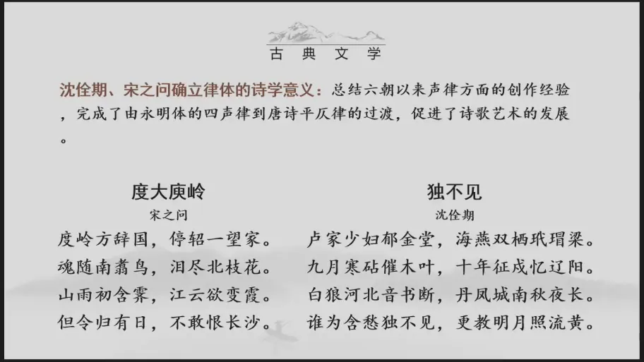
宋之问《度大庾岭》 27:13–34:03
我们先来看宋之问的一首诗歌《度大庾岭》这是宋之问他在唐中宗神龙元年的时候，这个时候因为得罪了武则天，他就被贬到了泷州，就是今天广东罗定这个地方担任参军，我们大家要知道，他要通过这个岭南才能进入到广东地区。所以走到这个大庾岭，差不多就是今天湖南和广东交界的这个地方，他写下了这一首诗。在今天这个江西和广东交界的地方是大庾岭，就是所谓的岭南五岭，就是湖南、，广东、江西这三省交界之处，这个大庾岭，是在江西的大余县和广东的南雄县交界处。所以我们可以讲这是一首贬谪诗，贬谪诗，它也算是一首〔原音不清〕诗，因为他是被贬到了这个偏远的广东地区，去担任一个小小的官职。好，我们来看诗歌在平仄的运用方面是非常严格的，合乎了平仄的要求，而且在颔联和颈联之中，你看“魂随南翥鸟，泪尽北枝花”，“山雨初含霁，江云欲变霞”，也是严格的遵循了对仗的规则。所以这是一个很完整的体系，这样的一首五言律诗，因为这个大庾岭上还种了很多的梅花。所以这个大庾岭也称之为叫做梅岭，大庾岭，越城岭、都庞岭，萌渚岭、骑田岭。这就是所谓的五岭，岭南五岭，就是越过了这五座山之后，就来到了这个偏远的南方，是长江和珠江流域的分水岭，岭南和中原的重要的分界线，那我们来看，我们前面提到的从格式上讲，这首诗合乎了格律诗在体式方面平仄的要求，格律的要求，句式的要求。所以你看这是一个格式方面很完整的一首格律诗，我们再来看他从写作的角度，这个时候，宋之问他是一个罪臣被贬之身。所以在诗歌之中，他讲“度岭方辞国”，这个国指的是中原地区，你看我在穿过了这个大庾岭之后，我就真的离开了中原了，这是他留恋的地方，对不对，“停轺一望家”，他所坐的这个马车。所以这个时候他停下来，“一望家”，去看向了他所留恋的北方的故土。所以我们看首句，这是〔已定其情〕，就是先第一联告知我们这首诗歌所要表达的这个情感的主题，可见，然后他是表达了一种留恋不舍，好，那么为什么留恋不舍呢，他说魂随南翥鸟，“泪尽北枝花”，所以我现在要到南方去了，那我的这个魂魄就随着那南飞的鸟儿一同去了。
但是我的感情是怀念北方的。所以看到北面树枝上的那些花朵，我的眼泪就不由得流下来了。所以大家看这一联写的很形象，这是写现实。“魂，随南翥鸟”，在现实之中，他不得不去被贬，因为被贬的原因不得不去向南方。但是内心的情感则是泪尽北枝花，还是留恋自己的北方的故土。所以这一点的对仗的使用上，它就形成了很鲜明的一个对比的效果，加深了这首诗歌给人的一种情感印象，我们再来看第三句，这个第三联，山雨初含霁，江云欲变霞，这是一个很典型的写景之句。所以大家看这句话，这首诗歌，它在构思上有它的巧妙之处，它是前面的两联先去写情，先把他内心的这种情感的感受告知读者，再来写景，以景来衬情。所以这一联之中他写景，说山上刚刚下了一场雨，在这种细蒙蒙、迷蒙的细雨之中，透露出了一点要放晴的样子。那么日落黄昏时分，在江面上要散未散的云彩，被雨天透露的那一点点的日光所反映，就变成了漫天红色彩霞了，这个景致写的越美，那表达的这种留恋之情它就越强烈，这样的艺术表现手法在南朝诗歌谢朓的诗歌里就曾经有啊。所以谢朓不是被贬到了宣城去做太守，离开南京金陵城的时候，他就写下了一首诗，他登上了这个三山，望到了这个金陵城的美，在诗歌中描摹的很绚丽，越是写的这么美。其实就是越是留恋这个地方而不愿意离去。所以这里的写景就是在映衬前面两联所写的情感，还是不想走，度过这个大庾岭对于他来说是一个极不情愿的事情。因此最后一句，你看前面不断的造势烘托，到了最后一联，吐露内心的心声，但令归有日，那假如有一天我收到了朝廷的调令，不敢恨长沙。所以我绝对不会像贾谊当年那样，被贬到长沙的时候表达那样的怨恨之情，就是我要乖乖的夹起尾巴做人，承认我的错误，争取早日调回京城之中。所以大家可以看到在这一首贬谪诗之中，情景它的结合是非常的紧密，很贴切的。所以这首诗歌无论是从律诗的体式，还是从他的艺术表现方法上，这两方面来看，都是一首比较优秀的五言律诗。
沈佺期《独不见》 34:04–40:05
好，我们再来看一首诗，沈佺期的《独不见》这首诗歌我们作品选上有选，如果大家有带作品选的话，你们可以打开作品选来看一下，那为什么我要让大家翻看这个作品选，你们看作品选之中的解题，解题里提到了，怎么这个题目就叫做《独不见》这么奇怪的一个题目，因为它是一个乐府旧题，好，大家注意用乐府旧题来〔摹写〕相关的诗歌，这也是文人惯常见的一种创作的方法，用旧题写新事这种创作方法，首先是由曹操开创的，像他写的什么《观沧海》《观沧海》这类的作品，这都是用旧题写新事，那《独不见》也是一个乐府旧题。但是沈佺期的这一首诗歌却是一个完整的七律，那在初唐时代，五律多见，七律极少，就是七律的发展，整个七言诗歌的发展，它都是滞后于五言的，他和五言不是一个同步发展的过程。所以宋之问的《度大庾岭》这首诗歌为代表的五律，这是初盛唐时期常见的一种诗歌的体式，运用的更多。但是这类的七律是少之又少，特别是这首七律还是写了一种这种思妇相思的题材，因为自初唐以来，七律更多的是用到了宫廷应制之中。所以这是一首较早出现的优秀的七律诗。那么后世的这些诗论家，因为它是最早出现。所以把它认为是唐人七律第一，就是关于唐代的七律，谁能作为第一，不同的诗论家有不同的看法，有的人是推荐了沈佺期的《独不见》有的人是推举了你像严羽，他就是推举了崔颢的《黄鹤楼》那还有人是你像以这个胡应麟为代表，他认为杜甫的七律才能称之为是唐人七律之第一。所以我们诗歌讲解过程中，也会陆续的涉及到这些作品，大家不妨也思考一下这个问题，究竟什么样的作品他才能堪当这个唐代七律的门面扛鼎之作，我们先来看这一首《独不见》这一首《独不见》它从题材上讲，它并没有过多的开拓，它是承接了六朝以来的传统的题材，就是写这样的一种思妇相思，“卢家少妇郁金堂，海燕双栖玳瑁梁”，而且大家看在写法上，它几乎和汉乐府之中这种铺陈叙事的描写是相近的。那汉乐府中写到这种，像《陌上桑》写他的这种华丽光彩照人，不就是通过他的服饰，他的这样的一个装扮来写的吗。
所以这里提到的“卢家少妇”、“海燕双栖玳瑁梁”，所居住的这种郁金堂，也是映衬了他的这种贵妇的身份，很铺陈的一种手法，接着我们来看第二联，“九月寒砧催木叶，十年征戍忆辽阳”，所以这里通过写这种制作临冬之际，制作这个寒衣来追溯、追忆远戍塞外这个征人。所以他已经是“十年征戍忆辽阳”，“白狼河北音书断”，这个“白狼河北”就是上一句提到的辽阳之地，它这是指的东北的边塞，“丹凤城南秋夜长”，所以大家看这两句话之间，它也是一个对照的关系，就是对照之间它的组合方式有多样化的组合方式，有时候是流水对，就是承接或者是因果的关系，那这个之间是一个对比的关系，这个“白狼河北音书断”写的是征夫，“丹凤城南秋夜长”写的是思妇，一个是远戍塞外久而未归，一个是在家中苦苦的等待，不断的在思念远行之人，“谁为含愁独不见”，“更教明月照流黄”，大家可以发现了，在这首诗歌之中，它更像是一首乐府的叙述，是不是对于场景的描写，几句之间是不同场景的一个变换和对照。所以沈佺期的这一首《独不见》他从体制上讲是一首合乎格律的七言律诗了。但是在艺术的表现方法上，他就像宋之问这样意象凝练，他还是有一点点写乐府诗的这种痕迹，这几句话之间它是一个场面、场景的连续转换，就有点叙事的这样的一种味道和风格。所以这是用古体的方法来写律体。所以在艺术上《独不见》就逊色于了《度大庾岭》就不像《度大庾岭》显得更加的凝练。但是他们二人应该说，对于律诗的定型，无论是在体制方面的一种理论的阐释和确定，还是在创作实践之中，他们都是做出了重要的贡献。
十一、文章四友与杜审言 40:07–57:12
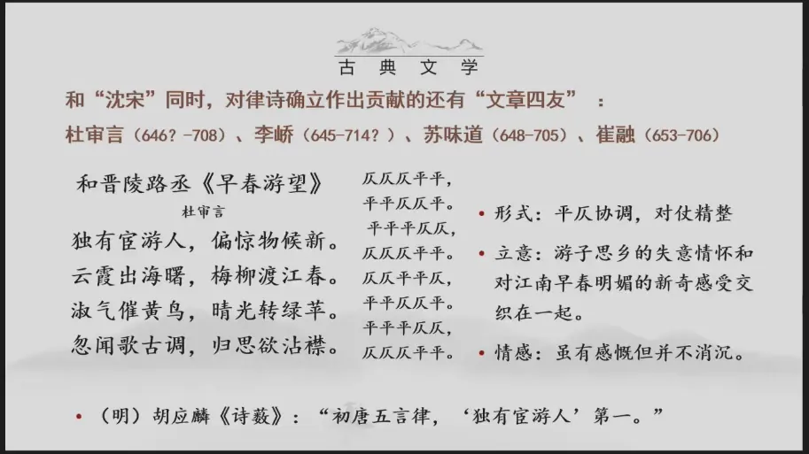
好，那我们再来看和沈宋，同时对于律诗的确立做出贡献的还有所谓的“文章四友”，那既然是以文章四友相称。其实这几个人都是以擅长写作宫廷文书而著称。所以像这里提到的李峤、苏味道。
杜审言的为人与自信 40:28–45:39
崔融都堪称是当时的初唐时期的大手笔，就是专门为朝廷制定大量的这种官书文书的这样的一些人物、重要的人物，在这其中杜审言他的名气最大，而且他在政治上也最为坎坷，其他三位应该说在朝中的最后都获得了这个高官。但是这个杜审言远不及其他三人，〔宦途坎坷〕，他在诗歌上的造诣却超越了其他三人，上节课我们给大家提到过杜审言是谁，他是谁，杜甫的爷爷，对不对。所以杜甫也很以他的这个爷爷为自豪，“诗是吾家事”，杜甫诗歌里不是讲说这个诗歌就是我们家家传的一个家学。所以他是很崇拜他的爷爷。好，杜审言今存的诗歌有四十余首，近体诗占的比重很大，这四十余首诗中二十八首都是格律诗。所以你看几乎就占到了一半之多，而且在这二十八首格律之中，只有一首失粘，就是平仄使用上发生了一些失误，只有一首，剩下的二十七首，都是合乎了格律的要求。所以杜审言在律诗的形成和发展过程中，他的贡献可以和沈宋相媲美。所以胡应麟在这个《诗薮》之中就讲到，说唐初五言、七言律，因为胡应麟是力挺杜甫。所以对于唐初的这些七言律都看不上，没有好的作品，“五言意味超然”，说五言也just so so，比较的平淡，没有什么出众的作品，“二体之妙”，就是既擅长五言又擅长七言的杜审言实为首创。所以这是胡应麟对他的评价，这个评价是很高了，认为他的这个两个体式皆善而显得成就突出，如果说沈宋较多注意探索律诗的格律，音韵等形式技巧的话，那杜审言他的贡献则更侧重于对于律诗的内容的充实和探索。好，我们来看他的一首作品，这是一首和诗，叫做《和晋陵路丞早春游望》一般来说这种和诗往往是会逊色于原作者的原诗。但是杜审言的这首作品恰恰相反，这个晋陵路丞为何人，今已不知，他所创作的这一首《早春游望》也散佚掉了，偏偏保存流传下来的是杜审言的这一首和诗，你看他的名字叫审言，字必简，他这个字和名是相应的，是在高宗咸亨年间考中的进士，在这个《唐史》之中就讲说这个人有一个特点很高傲，是“恃才高以傲世见疾”，为人非常的狂傲。
所以他认为他自己的水平很高，已经超越了文章四友之中的其他三人。所以他曾经说苏味道如果见到了他所写的判文，将要羞愧而死，“又言吾文章当得屈、宋作衙官”，所以我的文章只配像屈原，宋玉这样的人给我当助手，可见他非常的自负，自视才高，“吾笔当得王羲之北面”，我的书法是由王羲之这样的人来拜我为师，我书法水平也很高，在唐代的诗话里就记载了一个小故事，说杜审言病重的时候，一段时间他生病了，然后宋之问和另外一个朋友就去探望他，去问他情况如何，答曰他是这么回答的，说“甚为造化小儿相苦”，这个“造化小儿”就指的是天命，天意的意思，就是我命运遭受到这样的痛苦，我能说些啥呢，“然吾在，久压公等”，但是我活着的话，因为我才华过高。所以把你们这些人都压制的太长久了，“今且死，固大慰”，那如今可能将要离去了，将要离世了，固然值得欣慰，“但恨不见替人”，就是很遗憾不能见到接替我的人。所以你看宋之问在他的眼里都没有给他看上，他跟宋之问讲，我压抑你太久了。所以在他之后，确实他的孙子成为了他的接替者，接过了他的这个诗学的接力棒，也成为了诗歌史上承前启后的这么一位大诗人。
《和晋陵路丞早春游望》 45:39–57:12
那回到了这篇诗文我们来看，这是一首和诗，而且这首和诗同样是写作于这个〔宦游〕之中，这个晋陵指的是今天江苏的常州，江苏常州。所以大概在武则天永昌元年的时候，杜审言是被派到了江阴任职，江阴距离这个常州就不远。所以他和他的朋友之间就展开了诗歌上的这样的一个唱和，好，我们先稍微休息一下，好，了，我们接着来看这首诗歌，刚才我们讲到了这个时候，杜审言是被派到了江阴担任县丞，到江阴的这个时候，他已经宦游近二十年了，虽然他诗名甚高。但是一直远离京城。那么在江阴这样的地方，只是当一个小官，对于他的这样的一个恃才傲物的性格而言，内心必然是郁闷压抑的。所以虽然这个是江南早春的天气，他和朋友相约去游览风景，本是赏心悦目。但是他好像像王粲一样，王粲在《登楼赋》里是讲“虽信美而非吾土兮”，就这个地方始终不是我想要久居久留之处，不如归去。所以这首和诗写的就别有情致，清新而不快，赏心而不乐，受到了新鲜。但是这种新鲜带来的不是一种快乐，反而是思绪的凄清，景色是很优美的。但是表现的情感又是非常淡然的，有一种反差美，本来是面对这个惊喜的景色，是内心非常的惊喜、兴奋，惊喜于这种年轮的持续的转换，但实际上这样它表达的则是一种伤感。所以我说它是一种反差美，有一种、有一种言外之意的这种牢骚之好，那我们来看首句首联，首联即点题，独有宦游人，偏偏有我这样常年的宦游在外的人，虽然就是经常在外面见到一些新鲜事物。但是依然〔偏惊物候新〕，所以你们可以看到杜审言的诗歌之中，他这个用字就非常的讲究。所以“偏惊”这样的一种给人的这种新奇之感，就是到这种物候变化之际。那么对于久处于、流落于江南的这样的一位北方诗人，引发的这种触感还是很强烈的。所以首联之中就把他要书写的这样的一种情绪先点明了。好，我们再来看进入到了这个第二联，开始写景，“云霞出海曙，梅柳渡江春”，那么第三联，“淑气催黄鸟，晴光转绿苹”，这两联都是在写景，大家来看它在写景上有什么特点，这个写的是什么，如果让你把这句话转化成一个画面场景的话，它是属于什么样的镜头远景对不对，再到了下一联，“黄鸟”、“绿苹”，这个是属于近景远近结合，大家看杜审言的这样的一种景物的描写方法，几乎就成为了后来格律诗之中写景的一个惯例，一般来说格律诗之中写景都是由远及近，先写一个大景，再写一个近景。
好。所以在这个江南正春的这种新鲜的风光里，你看他先是发现了物候的变化，这个梅柳是初春正月的一些花木，北方是雪里寻梅，遥看柳色，残冬未消，而江南则是梅花缤纷，柳叶翩翩，春意盎然，“梅柳”渡江而来，江南就完全是花发〔木荣〕的春天了，一个催，你看第二第三联之中一个催一个转。所以一个是讲天气逐渐的暖和了，另一个是说黄莺鸟儿叫更欢，“淑气催黄鸟”，这个时候春意就越来越盎然了，这边是给大家列出的这一首，它在平仄格律上的使用，它的一个情况全是合乎于这的格律的。最后一联讲“忽闻歌古调，归思欲沾襟”，这就是我刚才给大家提到的反差点，明明这个景象写的春日的这种物候新的景象如此之精美，生气盎然。但是在最后一联中他却说是“归思欲沾襟”，江南的新春景色引发的是他怀念中原故土的情思。所以点明这个归思，也道出了自己的伤春的本意。所以这就这一首诗歌之中，中间两联对仗工整精美，而且整首诗歌平仄协调，对仗精准。那么从立意上讲，大家看他就写出了结合一己之感受，因为这个时候他已经在外宦游多年，这种游子思乡的一种诗意和对于江南早春明媚的一种新奇的感受，本来新奇引发的可能是一种兴奋。但是在这首诗歌之中，偏偏是新奇和伤感的结合，这是他构思巧妙的地方，好，这是我们提到的杜审言，他在五言方面的、五律方面的一首代表作。所以这首诗歌虽然有比较这种伤感的一种感慨。但是他不消沉。所以这是它的一个特点，胡应麟对这首诗歌，他的赞赏是很高的。所以他在《诗薮》中就讲，说初唐的五言律，他认为杜审言这一首诗歌可以堪称是第一。所以明代的人特别喜欢搞唐诗排行榜，动不动就要推谁谁谁为第一，是明代的诗论之中的一个独特的现象。
十二、不满宫廷诗风者：王绩 57:15–1:03:11
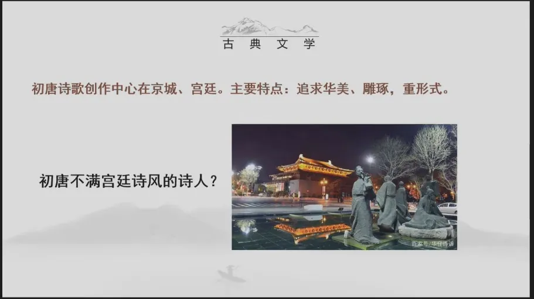
好，我们再来看前面我们讲到的这几位诗人，他们都是宫廷诗人的这样的一个身份。那么在整个初唐有没有不满于宫廷诗人的。所以不满于宫廷诗风的反其道而行之的诗人。所以我们前面讲到的重点关注的是这一批宫廷诗人，应该说他们是延续了南朝的诗风，而且在南朝的基础上，对于诗歌的体式做了进一步的律化定型，在这方面做出了一些贡献，那在同一个时代，有没有一些不满宫廷诗风的诗人呢，当然有啊，文学的发展它必然是多元的，是多样化的。那我们就来看一下初唐时期，一些不合流于宫廷诗风的代表性的诗人。
三仕三隐的矛盾 58:06–59:55
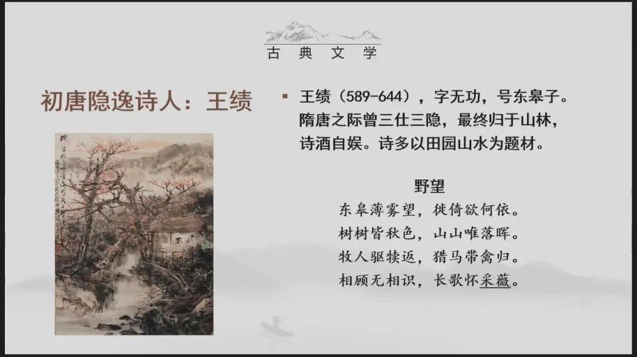
好，我们先来看初唐的一位是王绩，王绩，字无功，号东皋子，他其实生活的时代是要比沈宋更早，他是在整个的初唐的前期。所以他经历了隋唐之变，这种时代的变革。那么在隋唐之际，曾经三仕三隐，他的这一首《野望》代表作，《野望》在我们作品选上也有选，大家可以看一下作品选之中的解题，我们这个作品选的解题非常的好啊，就告知了我们大家很多的重要的信息，那大家可以看到我在这里讲说他在隋唐之际曾经三仕三隐，这个“三仕三隐”的具体的过程在解题之中就提到了，他先是被授予这个秘书省的正字，又做六合县的县丞，甚至一度为太乐丞。但是最后他还是选择了归隐，从这样的一个三仕三隐的经历之中，我们就可以发现王绩的思想有什么特点，他一定是在仕和隐之间怎么样比较的矛盾，对不对，如果说他就一心归隐，他完全可以像陶渊明一样辞掉官职回归田园，他一会儿出来做官，做了官以后又发现可能不适合自己，又回家归隐，归隐一段时间他又觉得自己要去做官。所以这个三仕三隐的这样的一种人生经历，就说明他在仕和隐这样的一个人生选择的问题上，一个终极的哲学问题上，它其实是有一定矛盾的。
《野望》与采薇之典 59:56–1:03:11
这一首《野望》这也是出现的最早的成熟的五言律诗之一，我们来看一下这首诗歌，这也是初唐时期写的比较出众的一首田园诗，“东皋薄（暮／雾）望，徙倚欲何依，树树皆秋色，山山唯落晖”，你看隐逸诗人王绩，他的语言就相对比较的朴实了，你看他用到的这个对仗也是比较简单的对仗，和宋之问沈佺期相比，他的语言就相对的自然了很多，就不那么的华丽，这都是在写田园的一些景象，在这样的景象之中，又加入到了人的活动，“牧人驱犊返”，“猎马带禽归”，你看无论是猎人，牧人还是猎马，他们都有所归之处。所以大家注意第三联的这一联的表达，他很有一种指向的意义，他们都有所归之处，我是怎样的呢，“相顾无相识，长歌怀采薇”，那么“采薇”我在这里做了一个标识，大家可以结合作品选来看作品选上的注释，这个“采薇”的典故我们一定要熟知，因为《诗经》之中也提到过这个“采薇”，这个“采薇”的典故出自于《史记·伯夷列传》，就讲到了商灭亡之后，商代的两个遗民伯夷和叔齐，他们隐居在了首阳山，“采薇而食”，作歌曰，“登彼西山兮，采其薇矣，以暴易暴兮，不知其非矣”，那由此可见，他们认为以周代商，这是以暴易暴。所以在这里借用这样的一个典故，“长歌怀采薇”表达对于这个古代隐逸先贤的这样的一种怀念之情。其实他内心向往这种隐逸的生活。但是这种隐逸的生活又不能真正带给他一种心灵的安定。所以他才会说“相顾无相识”，他是有孤独感。所以这首诗歌之中，我们讲它是一个倾向于表达隐逸情怀的诗。但是其实大家可以发现，在这首诗歌之中的这个隐逸情怀，它是有点微妙，有点复杂的，想隐。但是又不能做到真正的落隐。所以由此我们就可以发现，像陶渊明这样，真的是二十余年耕于田园之中，认为田园这样清贫的生活就是他内心最真实最忠诚的选择，是非常之难能可贵的。好，这是我们提到的，这一首《野望》你看这个作品它在语言的这个表达上，就和我们前面讲到的宫廷诗人的律诗体的表达就不太一样，它相对就写的比较的朴实无华。
十三、初唐四杰：称号、共性与命运 1:03:11–1:19:35
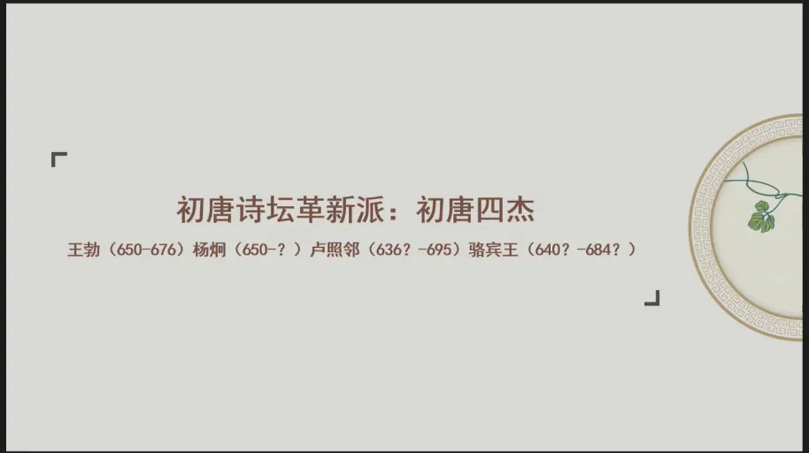
好，我们再来看，在初唐时期，和这个宫廷诗人形成的一个对照，是谁呢，是和上官仪差不多同时的所谓的初唐四杰，他们被誉为是初唐诗坛的革新派，他们为什么以四杰相称呢，这四个都是少年才高之人，王勃、杨炯，卢照邻、骆宾王，他们的共同的特点一个是少年才高。第二个是命运多舛，都挺坎坷的。好。
四杰称号的出处与共同特点 1:03:49–1:05:07
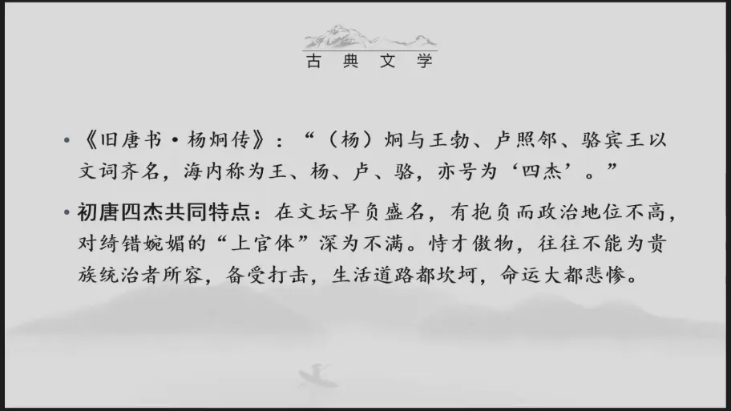
我们就来看一下四杰的诗歌创作，“四杰”的这个称号最初是出现在了《旧唐书·杨炯传》之中。那么是把杨炯，王勃、卢照邻，骆宾王，因为他们文词齐名，海内称为“王杨卢骆”，“亦号为‘四杰’”，这四个人的共同特点，你看按照《旧唐书》里讲，他们是早年就在文坛上，早年就负有盛名，有抱负。但是政治地位普遍不高，有才华。但是却没有有效的可以施展之地，更重要的是他们和上官仪大概同时，而这四个人都对“绮错婉媚”的上官体表现出了不满，想要改造这样的一种诗风。所以一方面因为早负盛名、少年才高，早负盛名，那当然就非常的有个性，恃才傲物。那么这种恃才傲物的个性，往往又为统治者所不容。所以导致了他们的人生道路充满了坎坷，命运大多悲惨。
王勃 1:05:08–1:11:59
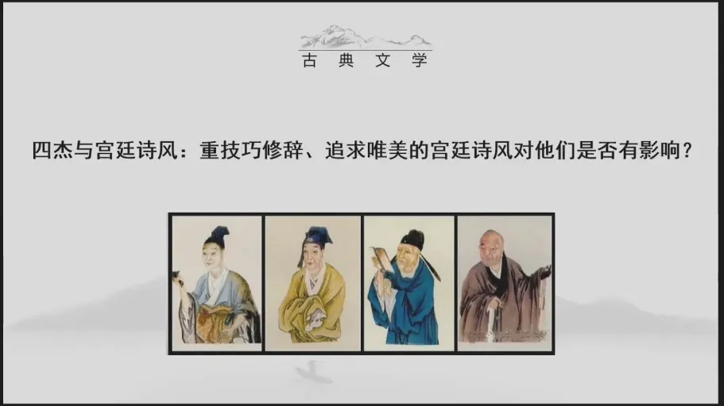
好，那我们来了解一下，简单的了解一下王勃，我们对王勃应该都熟，王勃是我们每一个人的唐诗的启蒙者，因为大家最早学到的这个唐代的诗歌，大概就是王勃七岁的时候所写的《咏鹅》是不是。那么这首诗歌就贵在形象非常的真切，很易于理解，你说他艺术上有多么的精妙高深，并没有，就是一首很形象的诗歌，王勃少年时期以这样的诗歌出名，可见其才华之高，而且这个人他出生于一个世家，他和前面我们提到的王绩有亲戚的关系，那王绩的哥哥王通人称文中子，这是隋末唐初的一位大儒学家，经学家。所以唐初的很多的文人士子都拜于王通的门下，这个王勃是王通的孙子，他自幼就聪颖过人，九岁的时候就开始读《汉书》九岁也就是大家上小学的一年级，人家读《汉书》读完《汉书》之后，就能把《汉书》之中的一些错误给指出，然后写了一篇学术性的文章，叫做《指瑕》十五岁的时候上书，向刘祥道畅论国家利害，提出了三条建议。所以这个右丞相一看了不得，竟连连惊叹这是一个神童。所以立即上表推荐。所以沛王这个李贤，这个李贤又叫章怀太子，我不知道大家有没有去过这个陕西的乾陵，就是这个武则天和唐高宗合葬的这个墓，就称之为叫做乾陵，那乾陵它是在一个主山上，周边全部都是陪葬墓，其中有一个非常有名的墓，就是章怀太子，因为他是十九岁的时候被杖毙的，很年轻就去世了。那么章怀太子，这个李贤就听闻了这个王勃的才名，就把他招入到了府中，做他自己的私人秘书，在官方的称呼就称之为叫做修撰，结果你看这个时候李贤也是只是一个少年，他十九岁的时候就去世了，被招进来的这个王勃，也不过只是十几岁的少年。所以两个人的玩心还比较的大，因为当时，在唐代的贵族之中，李唐的贵族之中，流行一种游戏叫做斗鸡，就是养这个大公鸡，让这个公鸡调教它们彼此的战斗。所以出于这种游戏之心，王勃就给这个沛王做了一篇檄文、战斗檄文，叫做《檄英王鸡》相当于向英王的鸡下了一封战书，这一看就是一个游戏之作。但是被高宗皇帝知晓之后，认为王勃这样的做法是破坏了诸王、诸侯王之间的和谐的关系。
所以就下令把王勃赶出了沛王府。所以这对于少年才高的王勃而言，这应该算是一次沉重的打击了，因为他也没有想很多。所以因为王勃，是过于的年少出众，他很早，就被步入到了这个制度之中，他又缺乏一定的阅历和经验。所以在政治上遇到很多的这种复杂的政治的现象、问题的时候，他都表现出了一种不成熟。所以你看他遭受了这个沛王府的打击，被赶出来以后，他就远游蜀川，到四川这个地方游历了一番，后来就被补到了虢州，就是今天河南的灵宝县，这个地方是西周时期虢国的属地。所以后来就被称为叫做虢州，在这里任参军，结果他就又遇到了一件事情，这个时候有一个官奴叫做曹达，他和王勃相识，而且是好友，他私自的逃出来，就成为了官府所要追捕的一个罪犯，他就找到了王勃，希望好朋友能够相救于他，这个王勃就悄悄的先把它藏起来了，出于这个对于朋友救助的仗义之意，结果藏了没两天以后，就发现了到处都贴满了要寻找这个曹达捉拿他的这个告示，公文就是在这个官府追索紧急之时，他不知道该怎么办了。所以他就做了一件事情，他就私自的把这个曹达给杀掉了，他认为他一做了这个事情以后，大概就人不知鬼不觉，因为对于曹达的这样的一个处理而获罪，对王勃的父亲也受到了牵连，被贬到了南海的交趾，这个交趾就是今天的越南这一带很偏远的一个地方，因为这个越南其实一直都是属于我们中原王朝的这个属地。但是王勃，他是一个孝子，因为他〔长〕于慈父之手，他和父亲之间的感情非常的深厚，那因为父亲因他而牵连，他深感羞愧。所以他就决定去前往这个交趾去奉养老父，在他奔赴于这个交趾的途中，他就途经了洪都，也就是今天的江西的南昌，恰遇都督阎公在滕王阁上大宴宾客，王勃也被邀参加，就写下了大家都所熟知的《秋日登洪府滕王阁饯别序》我们简称为《滕王阁序》除了序，还附了一首《滕王阁诗》在这一篇著名的序文之中，它是用骈体写成的大量的对偶的句子，就历数了历史上的这种失意的人物，以此来慰藉自己内心的这种失意的情怀。
但是他最后仍抱有一种积极的态度。所以王勃他虽然人生相对比较坎坷，但始终抱有一种少年之心。所以你看在《滕王阁序》里讲，他说感慨自己“空怀报国之情”，“岂效穷途之哭”，依然有一种积极的精神，希望自己能够有所作为。但是非常遗憾的是，他在渡海交趾之际，因为遭遇了溺水，就掉到海水里，又被人给救起来了。因此而受惊。所以最后就病逝了，终年的时候也才二十七岁，你看王勃是这样的经历。
杨炯 1:11:59–1:13:38
我们再来看这个杨炯，杨炯，字〔原音不清〕，他是华州华阴县人，就是今天陕西华阴人，他也是在十一岁的时候就被地方官员推荐为神童，把他以神童相称，而且就把他推到了这个弘文馆，也就是未来的朝廷文士所在地，因为他年纪太小了。所以是待制，弘文馆；二十七岁的时候应制举及第，他担任了秘书省的校书郎，三十三岁的时候，就成为了崇文馆的学士。所以他曾经和宋之问同时〔供职〕，后来被选为了这个盈川令，这个盈川就是我们今天浙江的衢州。所以这个杨炯和我们浙江这个地方还有一定的关系，那他最终，也是在盈川任上病逝的，这个杨炯就是才高而耿介，那唐人的这个诗话里就讲到了，说这个衢州盈川令杨炯，词学悠长，恃才简倨，不容于时，你看当时世人都容他不下来，他如此的傲慢的个性。所以“每见朝官，目为麒麟楦”，所以他每每去拜见这个朝官的时候，他就嘲笑人家，说他们只是麒麟楦，什么叫做麒麟楦呢，就是空有皮囊，你外面看上去很华丽。其实腹中空空如也。所以以此而得罪了很多的世人。
卢照邻 1:13:38–1:16:14
我们再来看这个卢照邻，卢照邻可能是四个人中命运最令人唏嘘的，卢照邻他是幽州范阳人，就是今天河北涿县，就是在北京的附近，他十岁的时候，就跟随当时的名儒、文字学家曹宪学，训诂学、音韵之学，就〔原音不清〕研习经史。所以你看他跟随的都是名家，学识的根基是非常深厚的，后来他就被授为了邓王府的典签，卢照邻也曾经去往四川任职，你看很巧，王勃杨炯，杨炯是在四川的梓州，王勃他曾经游历于蜀川，而这个卢照邻则是去往的这个新都，就是今天的这个四川雅安的新都县，在新都这个地方担任县尉。所以很巧的是他们三人都在四川相遇。所以在四川这个地方四杰之中的这三杰，曾经有诗歌上的唱酬和往来。但是卢照邻身体不好。所以他感染了很严重的风湿病，他去拜见了当时的医药界的大家孙思邈。但是孙思邈也没有办法医治他，以至于他在自己的文章之中感叹说，“覆帱虽广，皆不容乎此生；，你看天地之大，却容不下我这一个生命。“亭育虽繁，恩已绝乎斯代”，所以你看我眼见着我这个命将绝矣。所以后来因为病重，他就手脚的神经的这种麻痹，先是有一个手就失去知觉了，又有一只脚不能动了。所以你看他身体就遭受了这样非常病重的痛苦折磨，因为不堪其苦，他后来就在具茨山下自筑坟，是啊，就给他自己制造了一个墓室，僵卧其中，并与亲属诀。所以最后他选择的是什么呢，自沉颍水，结束了他充满幻想、，又尝尽了疾病折磨的痛苦一生。所以明代的人就对他的这个命运非常的感慨，就讲“今古文人，其穷，未有如卢升之者”，恐怕没有人比他的命运更惨了。所以这是四杰之中最为凄惨的。
骆宾王 1:16:14–1:19:35
那四杰之中的骆宾王，就是出自于浙江的一位诗人，是婺州义乌人。那么好我刚才说错了，《咏鹅》应该是骆宾王的作品，对我就刚才讲的时候感觉有点不对，骆宾王是七岁的时候就因《咏鹅》诗而才名远播。所以你看这四个人都有这样的一种神童之誉。那么在十几岁的时候，他就开始奔波于仕途之上，那这四人之中〔原音不清〕，他是有边塞经历的。所以骆宾王也是初唐时期为数不多的一位有真正出塞经历的这么一位诗人，他先赴这个西北的边塞，也曾经在蜀中有一段时间的滞留。所以和卢照邻、王勃也有交集，因为骆宾王的从军的时间比较的久，创作过不少的边塞军旅诗，而且他有实际的体验。所以他有真实的一种生活的感受，应该说他是唐代一代的边塞诗之先声，那骆宾王的人生最奇幻的地方在于哪呢，他后来参与到了徐敬业的起义之中，因为骆宾王他是以一个反武，这个反武派就是反对武则天统治，反对武则天的称帝。所以他和徐敬业就一起，打着这个起义的名号，为徐敬业起草了讨武氏檄文，斥责这个武后的罪状。所以这个唐代的诗话里就讲，说武则天读到了他的这篇文章就很感叹，“矍然叹曰：宰相安得失此人！”，说你作为宰相选拔人才的时候有失职之处，怎么就没有把这样的人选拔到朝廷之中，他其实在时间上是有错乱的，骆宾王也曾经在武后执政期间任职，就是在唐人的诗话之中的这样的一种记载，那就说明武则天是很欣赏和重视骆宾王的才华，徐敬业的起事，失败之后，骆宾王在兵乱之中就跳水而逃亡，不知所踪。所以他最终的去向就成为了文学史上的一桩悬案。所以我们看我们刚才简单的讲述了这四人在人生之中的这种际遇、遭际，就印证了他们的这种命运的坎坷，而且大家可以看到，这四个人几乎都没有在京城中停留很长的时间，因为种种的原因，很快就被贬或者是派往了各地。所以他们更多的是沉沦于中下层的地方官僚，那这样的一种经历就使得他们的诗歌之中表现出了和宫廷诗人不同的一种气象和表达，因为生活的经历发生了一些变化。
十四、四杰的诗歌成就与代表作 1:19:36–1:35:17
体裁分布：古体七言歌行与近体五律 1:19:36–1:20:14
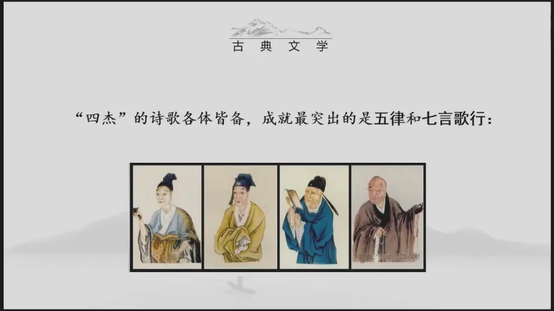
从诗体上讲，四杰的诗歌可谓是各体皆备，古今皆善，既有古诗也有近体诗，在古体之中，他们最为擅长的是七言歌行体，啥是七言歌行体，我们后面有具体的作品来讲。那么在近体诗之中，他们成就最突出的是五律，我们就结合具体的作品，我们来看四杰在诗歌的内容、，情调、格调方面他们所做出的一种突破。好，我们先来看四杰五律方面的代表作。
王勃《送杜少府之任蜀川》 1:20:17–1:24:12
你脑子有点混乱，这个《咏鹅》篇居然给搞错了，我刚才可能脑子里闪过的是这个《送杜少府之任蜀川》那么在这个四杰五律的代表作之中，大家最熟悉的可能是《送杜少府之任蜀川》你看在这首诗歌之中，“海内存知己，天涯若比邻”，那么王勃在送别之际能唱出这样的昂扬的歌调，就是很富有这种少年的气息，这首诗歌也因为这样的一种表达，成为了初唐时期非常出众的、很别具一格的一首送别诗，这首诗歌之中还有一个地方，大家注意一下这首诗歌的首联是怎么讲的，我们一起来背一背首联怎么讲的，“城阙辅三秦，风烟望五津”，你们有没有发现它有什么特点，这叫啥句式，咱们不是刚刚讲了吗，刚刚讲的这是啥，你看“城阙”对“风烟”，是不是？“辅”对“望”，“三秦”对“五津”，而且它这个对仗非常的精美，“三秦”，数词、名词，“五津”，数词、名词，是不是？首联就开始用到了对仗，那首联就用到了对仗的这样的一个用法。那么在对仗的这个修辞艺术之中叫做“偷春”，对，就是原本用在第二联之中的这个对仗，我悄悄的把它拿到了第一联来表现，这就叫做“偷春”，对，而且在这一联之中就表现了这个语言和诗歌的表达美，就是语言和表达之间的这种关系，你看“三秦”对“五津”，这个“五津”就是指这个长江、四川长江某一段的五个渡口，地名之中又包含了数字，这个数字三和五的相对就给人一种多的这样的一个印象和感受，不仅如此，“城阙”这是指宫门前的一个望楼，它很高，对不对啊，登上城楼去望能望到很远的地方。所以“城阙辅三秦，就给人一种高视之感，风烟望五津”，你看站在这里能够看见遥远的长江上的五个渡口，又给人了一种远视开阔之感。那么从这里我们就可以发现四杰，他们在语言上其实还是非常讲究的，讲究这种修辞，讲究这种华美，讲究营造的一种气势，有一种开阔博大的这样的一种气象。好。那么我们再来看这个诗歌之中最有名的这句话，“海内存知己，天涯若比邻”，好，它在形式上是对偶，就是我们大家所熟悉的那个。
你们看从意思上讲，“海内存知己”和“天涯若比邻”，它就形成了一个承接的关系，对不对，这种两句之间的承接的关系，我们称之为叫做流水对，对，你看第一联一个名对名、动对动，数字对数字，而且它是放在了这个第一联，称之为叫做偷春，对，那么第三联之中“海内存知己，天涯若比邻”，这是流水对，可见在对偶的使用上，王勃也是非常的讲究技巧的，是有变化的。所以他还是很重视诗歌的艺术性的。好。
骆宾王《在狱咏蝉》 1:24:12–1:33:16
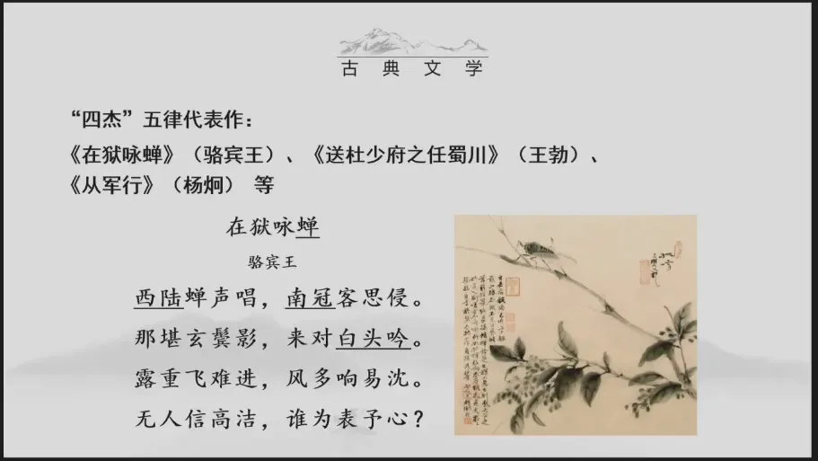
那我们再来看骆宾王的这一首《在狱咏蝉》这个《在狱咏蝉》他讲到了，既然是咏蝉，这是一个物象。所以这是一首很典型的咏物诗，而这首咏物诗则又是写作于在狱中这么一个特殊的情景、环境，那可见他所抒发的一定不是一种畅快之情，而是一种不平之气，对不对。所以这是写自己遭受诬陷之后的一种悲愤的心情，大家如果带作品选的话，你们依然可以看作品选上的这个解题，这首诗歌是写作于仪凤三年，这个时候骆宾王正好担任御史台的〔侍〕御史，因为他直言〔敢谏〕，上书议论。于是触怒了武后。所以武后就罗织了一个罪名，诬告他们贪污，因被诬贪污罪而下狱，下狱之后，他就写下了这一首咏物诗。所以既是在咏物，也是在言志，而且蝉这个意象，大家注意他在古典诗歌之中，这个意象的使用是带有一定的固定的文化内涵的，它可以代表一种悲伤之情，寒蝉对不对，“寒蝉凄切”，你看这是一种悲伤的情感，还有一点，蝉是生活在这个树上，古人认为它喝到的是无根之水，天上落下来的这个雨水还没有掉到地面上，就被它喝到肚子里了。所以蝉又是高洁的精神的象征。所以它既可以代表了一种悲伤这样的一种情感，又是一种高洁人格精神的象征，在这首诗歌之中，咏蝉就是二者兼而有之，它是一首很典型的五律。但是在写法上它也有用古体的艺术表现方法来写律体的痕迹，就有点像我们前面提到的《独不见》以古体入律，好，我们来看一下诗歌的首联，“西陆蝉声唱，南冠客思侵”，大家有没有发现这一联是什么，是不是“偷春”，对不对，首联用对，我们就把这样的一种对偶称之为叫做“偷春格”，好。那么从构思上讲，“西陆蝉声唱”，这是在写物，“南冠客思侵”，这又是在写人，“南冠”这是一个用典，来自于《左传》的用典，指的是囚徒、囚犯的代称。所以这个时候被关押在监狱之中的这个囚客，那也就是诗人他自己了，心生了思乡之情。所以大家看这一联，一句写物，一句写人，“南冠客思侵”，所以它既是一个“偷春”，对，但是偷春对，它又形成了一个对照，物与人的这样的一个对照，秋蝉的这个传统，我前面给大家提到过了，它代表了一种悲伤的情感，孤独寂寞悲哀，同时它也是一种高洁人格的象征。
好，我们再来看第二联，“那堪玄鬓影，来对白头吟”，“玄鬓影”对“白头吟”，这个“白头吟”它也是一个用典，这个用典，一个是汉乐府的杂曲之中有一个歌辞就叫《白头吟》“座中何人，谁不怀忧，令我白头”，第二个是讲卓文君跟司马相如私奔之后，后来司马相如另结新欢。所以卓文君一气之下而作《白头吟》表示了一种决绝之意。所以这是“白头吟”，也是在用典，你看它语言上很讲究，其次我们来看这一点，同样“玄鬓影”指代的是蝉，“白头吟”，这是指的诗人自身。所以这一点也是一句写物，一句写人，“玄鬓影”和“白头吟”之间又构成了一种承接的关系。所以这第二联是一个流水对。第一联是一个偷春格。第二个是一个流水格。好。那么在这里蝉对着我鸣叫，引发了我的情思。“露重飞难进，风多响易沉”，是不是？蝉，表面上这是在写蝉儿，它想飞进来却很难，它鸣叫的这个声音很快就被风声所淹没了。所以大家看进入到了第三联之中，他有了一点变化，律诗的格式，这四句之间讲究起承转合。你看起句以物起兴，对不对，承接句依然承接了第一句中的物与人的对照的关系。但是进入到了第三联的转折句就转向了以物写人，这两句话都是在写物，但同时又寄托了人的一种感慨，那这个时候被关在了狱中的骆宾王，何尝不像想飞进来的这个寒蝉，却遭遇了露中的恶劣环境一样。所以“露重飞难进”，就在暗示诗人此时所处的环境是非常之恶劣的，“飞难进”就表明了他想要有所作为却没有任何的办法，你想在政治上进取已经没有机会了。那么“风多响易沉”，是说对于他的这种迫害和摧残，以至于他的忠言无人听从，沉没消散。所以表面上是在写蝉，实际上是在写内心的情志。所以这是很典型的以物而寄托，这种方法多见于古诗之中，对不对，在《诗经》之中的诗篇就有这样的一种表现方法。所以这里就体现了一种以古体来写律诗的一个痕迹。最后一点，“无人信高洁”，“谁为表予心”，最后一联和第三联的表现方法是一致的，同样是一种寄托的方法，寄托的方法，表面是在写这个人，实际上也是在写蝉，没有人相信我的高洁，那同样也是在指蝉的高洁，那前面我给大家提到了，因为蝉是高居于树枝之上，餐风饮露，从来都不吃泥土之中，亦或者地面之上的东西。
所以没有污秽，没有人来相信我的高洁，我又向谁来表白我高洁的情意呢，“谁为表予心”，充满了一种激愤，显然最后对于自己身处的这个情境，它是具有一种强烈的不满，想要有所诉求。但是又未得有效途径的这种激愤。所以这首五言律对仗不仅工整，而且也赋予了变化，通过咏物来自喻身世，用古法而入律体。所以先是物、人相分，彼此对举，慢慢又合拢。最后蝉和人完全的合在了一起。所以以寄托之法就实现了这个“蝉即人、人即蝉”，所以清代的施补华，他在他的这个《岘佣说诗》中就讲“三百篇比兴居多”，就讲到《诗经》之中有很多的以物写人这样的一些诗篇，“唐人犹得此意”，他就举到了唐代，有三首著名的咏蝉诗，其一是虞世南的“居高声自远，非是藉秋风”，骆宾王则是讲“露重飞难进，风多响易沈”，认为这是患难人语，就是表达一种激愤的情绪，那虞世南的这种“居高声自远”，这就是借蝉来表达一种高洁的精神，李商隐则有“本以高难饱，徒劳恨费声”，这是一种牢骚之语。所以你看唐人同样写蝉。但是借这个蝉表达了不同的情思，好，这是我们提到的骆宾王他五律的作品。
杨炯《从军行》 1:33:17–1:35:17
在《在狱咏蝉》下面我们再来看这个杨炯的《从军行》这首诗我们简单的说一下，《从军行》这也是一个乐府古题，也是乐府古题。所以杨炯的这首诗歌也是用乐府古题来写律诗，而且《从军行》这个古题，在《乐府诗集》里解题之中表明了它是多反映军旅战争之事。但是杨炯的这一首《从军行》则表现了一种投笔从戎的豪情壮志。所以他在诗歌中讲，“烽火照西京，心中自不平”，听闻朝廷有战事，内心就涌动起了这个心，去〔原音不清〕，诗歌的最后一联讲，“宁为百夫长，胜作一书生”，所以“百夫长”这是古代军队之中比较低级的一个军官，就是类似于这种班长排长这样的低级军官。但是杨炯说我宁愿去做这样的低级的军官，也不想再当一个什么事情也出不了力的这样的一个书生，“胜作一书生”，所以这首诗歌的一首一尾，它就形成了一个点题和升华的这样的一个艺术效果，诗歌之中的中间两联，这是对于战争场景的一种想象，是杨炯他自己的一种想象，这种想象是为了映衬他自己的这样的一种豪情壮志，我们就可以发现了，在四杰的笔下写个人，写他们个人的一种基本〔情感〕，写他们对于送别的感受，写他们的理想、壮志，内容题材就丰富起来了，生动起来了。所以这是四杰和宫廷诗人的一个明显的不同，好，我们今天先讲到这里，我们下次再来看四杰的七言歌行，大家下次记得把作品选带上。
附：本稿中保留的存疑之处
按“最小改动、不能判断则保留”的原则，以下位置原音不清或语义不明，一律保留原貌并以〔〕标注，未作臆改。
| 段号 | 时间点 | 原文 | 说明 |
|---|---|---|---|
| 0519 | 00:28:11 | 它也算是一首〔原音不清〕诗 | 疑为“纪行诗”“迁谪诗”之类，无法确证 |
| 0565 | 00:30:18 | 这是〔已定其情〕 | 原作“这是疫情其心”，语义不通，谨慎推补 |
| 0752 | 00:40:58 | 〔宦途坎坷〕 | 原作“换图显课”，无法还原 |
| 0848 | 00:45:47 | 写作于这个〔宦游〕之中 | 原作“行业之中”，按上下文推补 |
| 0894 | 00:52:48 | 但是依然〔偏惊物候新〕 | 原作“天津路红星”，据前文“偏惊”推补 |
| 1278 | 01:12:01 | 杨炯，字〔原音不清〕 | 原音无法辨识，不作臆补 |
| 1291 | 01:12:37 | 同时〔供职〕 | 原作“同时系管”，谨慎推补 |
| 1321 | 01:14:01 | 就〔原音不清〕研习经史 | 原作“就方能来习经史”，无法还原 |
| 1374 | 01:16:47 | 那这四人之中〔原音不清〕 | 原作“没有珞璜”，无法还原 |
| 1516 | 01:24:57 | 担任御史台的〔侍〕御史 | 原作“玉台的监察御史”，据史实推补，待核 |
| 1517 | 01:25:04 | 因为他直言〔敢谏〕 | 原作“直言哽咽”，谨慎推补 |
| 1701 | 01:34:00 | 去〔原音不清〕 | 原作“去波兰”，无法还原 |
| 1717 | 01:34:51 | 个人的一种基本〔情感〕 | 原句未完，谨慎补足 |
〔说明〕第 018 与 046 两张课件对《野望》首句用字不一致（薄暮望／薄雾望），两者并存，正文以 薄（暮／雾）望 并列标注，不作裁定。